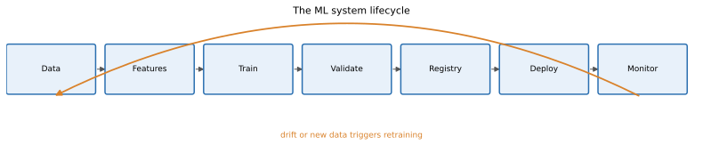
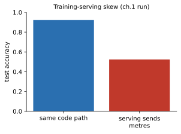

Imagine you build a model in a notebook. It scores 92% accuracy. Your manager says "great, put it in the app." Two weeks later the app shows 52% accuracy, nobody knows why, and the model cannot be rebuilt because the notebook was edited ten times. This chapter explains why that happens and what a professional does about it. A related story is a new recipe that tastes perfect in the test kitchen and fails in the restaurant because the ovens and ingredients were different. ML has the same problem, with extra traps. By the end of this chapter you will be able to draw the full life of an ML system, explain training-serving skew with a number you measured, name the common kinds of ML "technical debt", choose between batch and online prediction using arithmetic, and lay out a project folder that a team can maintain.
Words you need in this chapter:
| Word | Plain meaning |
|---|---|
| Model | A function learned from data. Input features go in, a prediction comes out. |
| Training | The one-time (or periodic) job that learns the model from old data. |
| Serving (inference) | Using the trained model to make predictions on new data, usually many times. |
| Feature | One input number or category the model uses, for example "orders in last 30 days". |
| Production | The real system that real users or other systems depend on. |
| Pipeline | A chain of steps run in order, each step feeding the next. |
An ML system is a loop with eight stages. Each stage has an owner, an input, and an output.

How to read this picture: each blue box is a stage and the grey arrows show the order. The orange arrow from Monitor back to Data is the most important part. It says the system is never "done". When monitoring sees that the world has changed (we call this drift, Chapter 10), the loop runs again.
| Stage | What happens | Example artifact | Owner (usually) |
|---|---|---|---|
| Data | Collect and clean raw data | A Parquet table of orders | Data engineer |
| Features | Turn raw data into model inputs | orders_30d, avg_basket | Data scientist, data engineer |
| Train | Learn model parameters | A model file, a metrics report | Data scientist, ML engineer |
| Validate | Test that the model is good enough and safe | Evaluation report, behaviour tests | ML engineer |
| Registry | Store the approved model with its history | "churn model, version 7" | ML / MLOps engineer |
| Deploy | Put the model behind an API or a batch job | A running container | MLOps, SRE |
| Monitor | Watch health, data and accuracy | Dashboards, alerts | MLOps, SRE |
| Retrain | Start the loop again with new data | A scheduled or triggered pipeline | MLOps |
MLOps is the short name for the practices that run this loop reliably: "ML" plus "Operations", like DevOps for models. An ML engineer or MLOps engineer owns the path from "a model exists" to "a model is running and watched".
Before you build, you ask five questions. They decide everything else.
| Requirement | Question | Example answer |
|---|---|---|
| Latency | How fast must one answer come? | p95 under 100 ms |
| Throughput | How many predictions per second? | 200 per second at peak |
| Freshness | How old may the input data be? | Features at most 1 hour old |
| Cost | What is the budget per 1,000 predictions? | Under $0.01 |
| Reliability | What happens if the model is down? | Fall back to a simple rule |
Three inference modes (ways of running predictions):
Where does the model run? Cloud (your servers, easy to update) or edge (on the phone or device; works offline, low latency, hard to update).
Problem 1.1.1 A bank must score 2,000,000 customers each night for a "likely to leave" list. The batch window is 2 hours. What throughput does the batch job need? Would online serving be needed?
| Formula | throughput = rows ÷ seconds available |
|---|---|
| Plug in | 2,000,000 ÷ (2 × 3,600) |
| Compute | 2 hours = 7,200 seconds. 2,000,000 ÷ 7,200 = 277.8 rows per second (code check: 2_000_000/(2*3600) printed 277.77777777777777) |
| Answer | The job needs about 278 rows per second, which one ordinary machine can do. The list is read the next morning, so batch is enough and online serving would only add cost. |
| Check | 278 × 7,200 = 2,001,600, which is just above 2,000,000. |
| Why it matters | Choosing batch over online can cut serving cost to almost zero. Always ask "who needs the answer, and when?" first. |
Problem 1.1.2 A card-fraud model must answer within 80 ms while the customer waits at a till. Which inference mode, and what does the 80 ms budget imply for the model?
| Step 1 | The answer is needed while a human waits. A nightly list is useless, so batch is out. |
|---|---|
| Step 2 | One transaction at a time, with an API call inside the payment flow, means online serving (or streaming if events are already on Kafka). |
| Step 3 | The network, feature lookup and model all share the 80 ms. If network plus feature lookup take 50 ms, the model has about 30 ms. A huge model that needs 200 ms cannot be used; a small tree model can. |
| Answer | Online (or streaming) inference with a small, fast model, and a rule-based fallback if the model is slow. |
| Check | Add the budget: 50 ms + 30 ms = 80 ms. Good. |
In interviews, "design an ML system" always starts with these five requirements. Say them out loud before drawing any boxes. Thinking in terms of latency, throughput and service targets (SLAs) is a real advantage in MLOps.
Check yourself
Answer: Data, features, train, validate, registry, deploy, monitor, retrain.
Answer: Batch. Nobody waits for the answer, and weekly freshness is enough.
Answer: The world changes, so the model decays. Monitoring triggers new data collection and retraining.
Training-serving skew is any difference between how data is prepared at training time and at serving time. The model code is fine. The inputs are not the same.
Common causes:
The cure is simple to say and hard to do: one code path for feature logic, used by both training and serving, plus tests that compare the two.
We train a model that predicts "high BMI" from height and weight. The training pipeline uses height in centimetres and standardises (subtract the mean, divide by the standard deviation, both learned from training data). Then a "serving team" sends height in metres by mistake.
Before you run it, what do you think the accuracy will be when the serving side sends metres?
import numpy as np
from sklearn.linear_model import LogisticRegression
from sklearn.metrics import accuracy_score
rng = np.random.default_rng(42)
n = 2000
height_cm = rng.normal(170, 10, n)
weight_kg = rng.normal(70, 12, n)
bmi = weight_kg / (height_cm/100)**2
y = (bmi + rng.normal(0, 1.5, n) > 24.2).astype(int)
def feats_train(h_cm, w): # training pipeline: height in cm
return np.c_[h_cm, w]
X = feats_train(height_cm, weight_kg)
mu, sd = X.mean(0), X.std(0)
Xs = (X - mu) / sd
model = LogisticRegression().fit(Xs[:1500], y[:1500])
print("test accuracy (same code path):", round(accuracy_score(y[1500:], model.predict(Xs[1500:])),3))
h_m = height_cm / 100 # serving code written by another team
Xserve = (np.c_[h_m, weight_kg] - mu) / sd
print("test accuracy (serving sends metres):", round(accuracy_score(y[1500:], model.predict(Xserve[1500:])),3))
print("share predicted positive, serving path:", round(model.predict(Xserve[1500:]).mean(),3))
print("true positive rate:", round(y[1500:].mean(),3))Real output (the script also prints the train-path positive share, 0.514):
train rows 1500, test rows 500
test accuracy (same code path): 0.922
test accuracy (serving sends metres): 0.524
share predicted positive, train path: 0.514
share predicted positive, serving path: 1.0
true positive rate: 0.524
Explain line by line. The model learned that "weight above average and height below average means higher BMI". With metres, every height is about 1.7. After subtracting the training mean (170) and dividing by the standard deviation (about 10), the standardised height becomes (1.7 − 170) ÷ 10 ≈ −16.8. That is absurdly far below average, so the model screams "high BMI" for everyone: the positive share is 1.0. Because 52.4% of real cases are positive, always saying "positive" gives 52.4% accuracy, which is what we measured. The system never crashed. No error. It just became useless.
Problem 1.2.1 Using the numbers above, compute the standardised height for a person of 1.70 m when the training mean is 170 cm and the standard deviation is 10 cm.
| Formula | z = (x − mean) ÷ sd |
|---|---|
| Plug in | (1.70 − 170) ÷ 10 |
| Compute | 1.70 − 170 = −168.30, and −168.30 ÷ 10 = −16.83 |
| Answer | The model sees a height 16.8 standard deviations below average, about 17 "sigmas" off. Real data almost never goes beyond 4 or 5. |
| Check | The correct input, 170 cm, gives (170 − 170) ÷ 10 = 0, exactly average, as it should. |
| Why it matters | A feature that is many standard deviations from the training range is a cheap alarm for skew. We build it in Chapter 10. |
Problem 1.2.2 The service returns "positive" for all 500 test rows, and 262 of the 500 really are positive. What is the accuracy, and how do you cross-check it with the printed numbers?
| Formula | accuracy = correct ÷ total |
|---|---|
| Plug in | 262 ÷ 500 (every positive is a hit, every negative is a miss) |
| Compute | 262 ÷ 500 = 0.524 |
| Answer | The accuracy is 52.4%, no better than a coin that always says "yes". |
| Check | The printed true positive rate is 0.524 and the printed accuracy is 0.524. They match, as they must when a model predicts one class for everyone. |
| Why it matters | If "share predicted positive" is 1.0 or 0.0, stop and look for skew before you look at anything else. |
Skew is the number one reason "good models" fail after deployment. Solutions you will meet: a feature store (Chapter 5), shared feature code packaged as a library, and logging the exact features used at serving time so you can replay them in training. Interviewers love the question "what is training-serving skew and how do you prevent it?"
Check yourself
Answer: Usually no. It silently lowers quality, which is why it is dangerous.
Answer: For example different units, different missing-value filling, or features computed in two separate code bases.
Answer: One shared code path (or feature store) for feature logic in training and serving.
| Debt | What it looks like | A concrete example | Typical fix |
|---|---|---|---|
| Glue code | Most of the code just moves data between libraries | 400 lines to reshape a DataFrame for one library call | Standard interfaces, fewer one-off scripts |
| Pipeline jungle | Many ad-hoc scripts with hidden order | run_a.py must run before run_b.py, nobody remembers | One orchestrated pipeline (Chapter 6) |
| Dead experimental code | Old paths nobody dares to delete | Three unused feature versions in the repo | Delete, rely on version control |
| Undeclared consumers | Other teams quietly read your model output | Marketing reads your score table directly | Versioned interfaces, ownership |
| Dependency hell | Library versions conflict or change results | A new scikit-learn version changes a default | Lock files and containers (Chapter 2) |
| Hidden feedback loop | The model changes the data it later learns from | Recommender only shows items it already likes | Randomised exploration, logging |
| Configuration debt | Settings hard-coded in notebooks | lr = 0.01 typed in cell 14 | Config files (Chapter 2) |
Dependency hell means two parts of your system need different, incompatible versions of the same library, or a silent version change alters behaviour. Remember this one; Chapter 2 solves it.
A feedback loop happens when the model's output affects its own future training data. Here is the smallest possible example. Two items, A and B, have exactly the same true click rate, 50%. A greedy "recommender" always shows the item with the most clicks so far.
import random
def sim(seed, steps=2000, greedy=True):
rng = random.Random(seed); clicks = {"A": 1, "B": 1}; shown = {"A": 0, "B": 0}
for _ in range(steps):
item = max(clicks, key=lambda k: clicks[k]) if greedy else rng.choice("AB")
shown[item] += 1
if rng.random() < 0.5: clicks[item] += 1 # both items: true click rate 0.5
return shown
for s in range(4): print("seed", s, sim(s))
print("random choice:", sim(0, greedy=False))Real output:
seed 0 {'A': 2000, 'B': 0}
seed 1 {'A': 2000, 'B': 0}
seed 2 {'A': 2000, 'B': 0}
seed 3 {'A': 2000, 'B': 0}
random choice: {'A': 1019, 'B': 981}Explain: at the start both items have 1 click, a tie. Python's max picks the first one, A. A gets shown, collects clicks, and now leads. B is never shown, so B can never catch up, even though B is equally good. Under random choice the two items get about half each (1019 and 981). The greedy system "learns" that A is better, but it only learned its own choice. In a real recommender, B might be the better item and you would never know. The fix is exploration: sometimes show something other than the current best (Chapter 8 shows bandits, which do this properly).
Problem 1.3.1 In the greedy run, A was shown 2,000 times with a true click rate of 0.5. About how many clicks does A have, and what does B have?
| Formula | expected clicks = shows × click rate + starting clicks |
|---|---|
| Plug in | 2,000 × 0.5 + 1 |
| Compute | 1,000 + 1 = 1,001 for A. B stays at its starting 1. |
| Answer | The system believes A has about 1,001 clicks and B has 1, a 1000-to-1 "preference" built purely from its own behaviour. |
| Check | Both items have the same true rate (0.5), so the real difference is zero. |
| Why it matters | Data collected by a deployed model is biased by that model. Log which items were shown (and randomise a small share) so future training stays honest. |
Problem 1.3.2 Your team's model has 3 upstream feature tables, each maintained by a different team, and no one tells you when columns change. Name the debt and one control you would add.
| Step 1 | Your model depends on data someone else owns and may change. This is an unstable data dependency (a close cousin of "undeclared consumers", in the opposite direction). |
|---|---|
| Step 2 | Add a data contract (an agreed schema and freshness) and an automatic schema check at the start of the pipeline (Chapter 5). |
| Answer | Unstable data dependency; control it with schema validation that fails the pipeline loudly when a column changes. |
| Check | Without the check, a renamed column would silently become all-null, and the model would still return numbers. |
Senior MLOps work is mostly paying down this debt. A classic paper called "Hidden Technical Debt in Machine Learning Systems" (Google, 2015) popularised these ideas; it is worth reading once you finish this chapter.
Check yourself
Answer: When the model's own predictions shape the data it later learns from, biasing it.
Answer: It was never shown, so it could not collect clicks to overtake A.
Answer: Incompatible or silently changing library versions that break or change results.
Notebooks hide order (cells can be run in any order), are hard to test, produce huge diffs in version control, and mix data, logic and plots. The professional habit is: explore in a notebook, then move the working logic into modules (plain .py files with functions) that are imported by both the notebook and the pipeline.
Good ML code has: small functions with clear inputs and outputs, type hints (for example def clean(df: pd.DataFrame) -> pd.DataFrame), configuration outside the code, tests, and code review before merging.
This is a layout (a pattern, not program output), in the style of a "cookiecutter" project template:
churn-model/
README.md what it is, how to run it
pyproject.toml dependencies and tools
Dockerfile how to build the runtime
configs/
train.yaml hyperparameters, paths, seeds
data/ NOT in git: tracked by DVC (Chapter 4)
notebooks/ exploration only
src/churn/
data.py load and validate raw data
features.py feature logic (used by train AND serve)
train.py training entry point
evaluate.py metrics and behaviour checks
serve.py API (Chapter 7)
tests/
test_features.py unit tests
test_model_behaviour.py model tests (Chapter 9)
.github/workflows/ci.yaml automation (Chapter 9)The key rule: features.py is imported by both train.py and serve.py. That single import is your best defence against skew.
Before you run it, what do you think prints for 1.15 metres?
import math
def height_to_cm(value, unit):
return value * 100 if unit == "m" else value
print(height_to_cm(1.7, "m"))
print(height_to_cm(1.15, "m"))
print(math.isclose(height_to_cm(1.15, "m"), 115.0))
assert height_to_cm(1.15, "m") == 115.0, height_to_cm(1.15, "m")Real output (the first three lines print, then the last line raises):
170.0
114.99999999999999
True
AssertionError: 114.99999999999999Explain: computers store most decimals in binary, which cannot hold 1.15 exactly, so 1.15 × 100 is 114.99999999999999. The strict == test fails even though the function is correct. math.isclose allows a tiny tolerance and returns True. Lesson: a test that is too strict is as annoying as no test. Compare floats with a tolerance.
Problem 1.4.1 You have 6 team roles interacting with the model (data engineer, data scientist, ML engineer, product owner, SRE, security). A bug appears: scores jumped 30% overnight. Order the first three questions you ask.
| Step 1 | Did the input data change? Ask the data engineer: new column, null rate, late load? (Most incidents start here.) |
|---|---|
| Step 2 | Did the model or code change? Check the registry and last deployment with the ML engineer. |
| Step 3 | Did the real world change (promotion, holiday)? Ask the product owner. |
| Answer | Data first, then model or code, then the world. SRE confirms the system itself is healthy (no timeouts, no restarts). |
| Check | Each question can be answered from a log or a chart; if you cannot answer, that is a monitoring gap to fix. |
Problem 1.4.2 Which file in the layout above should contain the function orders_per_30_days(df) and why?
| Step 1 | It is feature logic, so it belongs in features.py. |
|---|---|
| Step 2 | Both train.py and serve.py import it, so the logic exists exactly once. |
| Answer | src/churn/features.py, to prevent skew by sharing one implementation. |
| Check | Search the repo for the function name; it should be defined in one place only. |
Code review and tests are what separate an "ML engineer" from a "data scientist who deploys". You work with data engineers (inputs), data scientists (models), product (requirements) and SRE (running it). Knowing each role's vocabulary makes you the glue.
main.py. That moves the mess, it does not fix it. Break the logic into small functions with tests.Check yourself
Answer: The training script and the serving script.
Answer: Floating-point arithmetic can give tiny rounding differences.
Answer: In notebooks, with finished logic moved to modules.
| Pattern | Meaning |
|---|---|
rows ÷ seconds | Throughput needed for a batch job |
z = (x − mean) ÷ sd | How unusual a feature value is |
features.py shared | Cure for skew |
| p95 under 100 ms | Example latency requirement |
Problem 1.1 Name the three inference modes and give one use for each. Answer: Batch (nightly churn list), online (fraud check at a till), streaming (sensor alerts from Kafka).
Problem 1.2 600,000 rows must be scored in a 30-minute window. What rows per second? Answer: 600,000 ÷ 1,800 = 333.3 rows per second.
Problem 1.3 Training mean of a feature is 40 and sd is 8. Serving sends 100. What is z, and is it a warning sign? Answer: (100 − 40) ÷ 8 = 7.5. Yes, anything past about 4 or 5 deserves an alert.
Problem 1.4 What is the output? max({"A":1,"B":1}, key=lambda k: {"A":1,"B":1}[k]) Answer: 'A'. On a tie, max returns the first maximal element, which is why A won every time in our simulation.
Problem 1.5 Find the bug: serving code does df.fillna(0) while training used df.fillna(df.mean()). Answer: Missing values are filled differently, a classic skew. Save the training means and reuse them, or share one function.
Problem 1.6 A model is 92% accurate in the notebook and 52% in production, yet "no errors in logs". List three checks in order. Answer: (1) Share of predictions per class (all one class?), (2) feature distributions live vs training, (3) compare notebook code path with API path on the same raw rows.
Problem 1.7 Why is a nightly batch job with stale predictions sometimes better than an online model? Answer: It is cheaper, simpler and easier to test, and nobody needs a fresher answer.
Problem 1.8 Your recommender always promotes today's top seller and sales concentrate on it. Name the issue and a remedy. Answer: A hidden feedback loop. Add exploration (random or bandit traffic) and log what was shown.
Problem 1.9 (interview) Explain training-serving skew to a non-technical manager in three sentences. Answer: A model learns on data prepared one way. If the live app prepares the same facts differently, the model is confused but does not complain. We prevent it by using the same preparation code in both places and checking live inputs.
Problem 1.10 (interview) "Design an ML system for loan approval." What do you ask first? Answer: Latency, volume, freshness of data, cost of a wrong decision, what happens when the model is down, regulatory need for explanations, and who owns the model afterwards.
You are my patient, practical professor. I am a working professional moving into ML and MLOps, and English is my second language, so use simple words. Teach me the ML system lifecycle (data, features, train, validate, registry, deploy, monitor, retrain). Explain each stage with an everyday analogy, then with one concrete example. After each stage ask me one question and wait for my answer before continuing. Finish by asking me to draw the lifecycle from memory in text and correct me.
You are my patient, practical professor. I am a working professional moving into ML and MLOps. The topic is training-serving skew. Explain it step by step with a small numeric example different from the BMI example, show how to detect it with code, and show how to prevent it. Then give me 8 graded exercises without solutions, from easy to hard, and offer to check my answers one at a time.
You are my patient, practical professor. I am a working professional moving into ML and MLOps, with English as my second language. Quiz me one question at a time on ML technical debt: glue code, pipeline jungles, dependency hell, undeclared consumers, hidden feedback loops. Start easy, get harder, give feedback after each answer, and keep a score. After 10 questions, tell me my weak spots.
You are my patient, practical professor. I am a working professional moving into ML and MLOps. Review my ML project layout and my plan to move notebook code into modules. Check where feature logic lives, whether training and serving share it, where config and tests live, and what is missing. Be specific and kind. My layout and notes: [PASTE HERE]
You are my patient, practical professor. I am a working professional moving into ML and MLOps. Run a mock interview on "design an ML system": ask me about requirements, batch vs online vs streaming, edge vs cloud, ownership with other teams, and failure handling. Ask one question at a time, grade my answer out of 10 with a short explanation, and show a model answer after each.